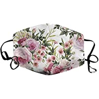
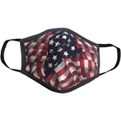
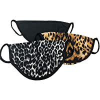

Mask Selection

Floral Print
Floral print patterns that are bright and cheery. Patterns to go with a variety of colors.

Patriotic
For those who have a strong sense of county. People who like to display their patriotism to everyone around them.

Variety 3-Pack
The variety pack provides the opportunity to change the mask to match your mood. It also allows you to match your outfit.